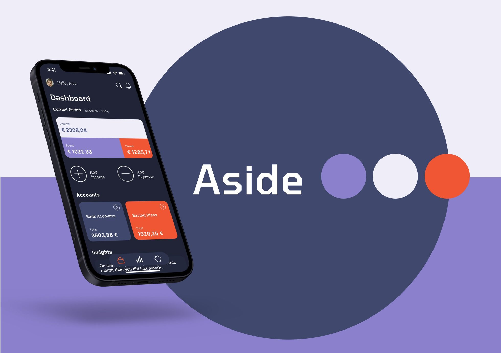
- Type
- Concept Project
- Category
- Fin App
- Timeframe
- 2 weeks
- Tools
- Figma
Challenge
From partial instructions to a distinguishable product
This student project was a challenge to develop a product based on partial branding guidelines of a Money-Saving tool, and distill the instructions of a brief into a full developed and distinguishable product.
Many financial tools are overwhelming for those with limited financial knowledge. Saving and managing money is crucial, but it’s easy to lose track or miss patterns. People with less financial literacy and time need an accessible tool that offers smart money management tips.
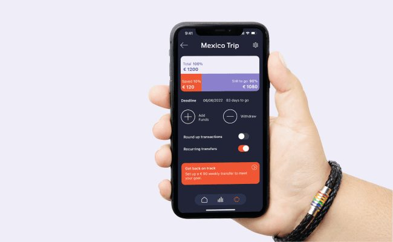
Problem
Striving for consistency and clarity
1
Overwhelm from complexity, the amount of information and the technical jargon used
2
Difficulty identifying spending patterns.
3
Lack of time for money management
4
Limited financial literacy and advice
User Research
Uncovering Financial Habits, Pain Points, and Unique Saving Strategies
The goal of the research is to understand the goals and pain points of users with varying levels of financial literacy as they manage their personal finances. I am looking to inquire what tools, digital or analog, if any, do they use to keep track of their finances.
I target a diverse group of participants with different financial knowledge levels, income brackets, and financial management habits. I specifically began by exploring users’ current financial behaviors, their motivations for saving, and the challenges they face. The 10 Interviews were scheduled in 3 separate days, some performed online, and some in person.
Research Results
Patterns
Heavy reliance on manual methods (spreadsheets, note-taking).
Users often juggle multiple tools (banking apps, third-party apps) but lose track of the overall financial picture.
Most users focus on checking account balances rather than reviewing spending patterns or planning long-term.
Pain Points
Difficulty maintaining a consistent savings routine.
Struggles in identifying areas where expenses can be reduced.
Frustration with budgeting tools requiring too much manual input.
Confusion with financial jargon.
Surprising Findings
Some users use separate bank accounts to “hide” money from themselves as a saving strategy.
Recurring transfers to investment accounts are often used as a "forced" savings method.
A few users avoid digital payment options, relying on cash to limit impulse spending.
Goals Mentioned
Users want a clear, easy-to-understand overview of their spending.
Desire for automation in saving and budgeting.
Flexibility to adjust financial plans.
Interest in personalized, contextual financial advice.
User Needs and Requirements
As a new user, I need to be able to create a profile, so that the financial advice I receive is personalised.
Requirements
- Onboarding with link to bank and first saving plan.
As a money-saver, I need to input my income and expenses to get an overview of my finances.
Requirements
- Direct link to bank.
- Manual input of Input and Spending.
As a user, I want to see a dashboard of my finances clearly and visually, so that I can see how much I am spending on what at a glance.
Requirements
- Dashboard as Homepage, with period's balance and overview of budget.
As a user, I want to see how my finances and savings have changed over time to stay on track.
Requirements
- Insights, Most common expenses, Advices, crossed with news and financial advices from experts.
As a user, I need to set my savings goal and deadline, so I can save accordingly.
Requirements
- Create new saving plan, with deadline or not. List of possibilities of achieving goal: Rounding up every transaction, scheduled transactions or custom.
Solution
A powerful yet simple platform that makes exploring history engaging and accessible.
Simplicity and clarity are prioritised throughout the product.
Savings Plans are the focus, helping users link numbers to real-life goals.
Navigation is kept minimal for ease of use.
Consistent color coding for Income, Expenses, and Savings ensures clarity.
Insights and tips are integrated where needed to improve saving habits.
Dashboard
Main screen displaying key information at a glance.
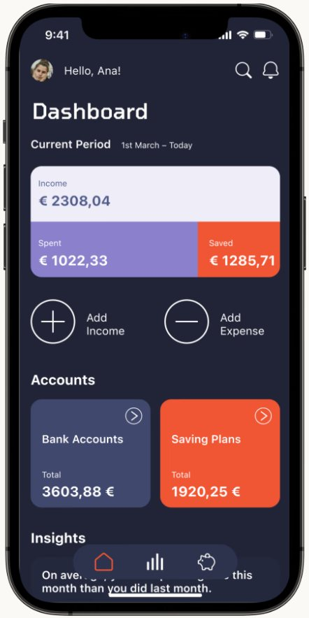
Analytics
Detailed view of trends and patterns, visual transaction overviews, and savings allocation.
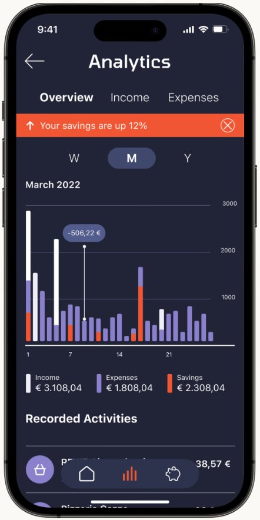
Saving Plans
Overview of current goals and status, with a simple, intuitive process for creating new goals.
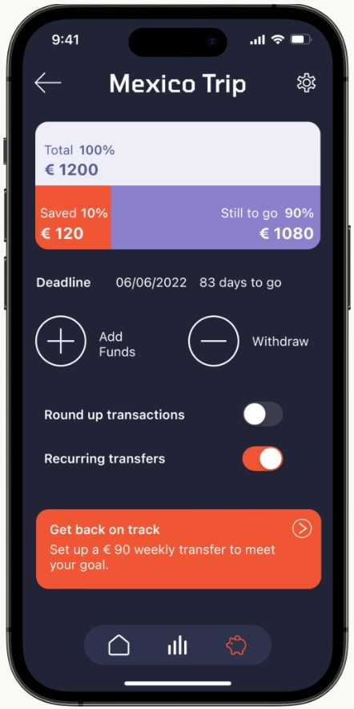
User Flows
A minimal and intuitive navigation
I focused on creating the most straightforward way for users to create new saving plans and easily access the information they need. Since the app's main focus is on saving plans, the statistics are placed in their own dedicated section, directly from the main navigation.
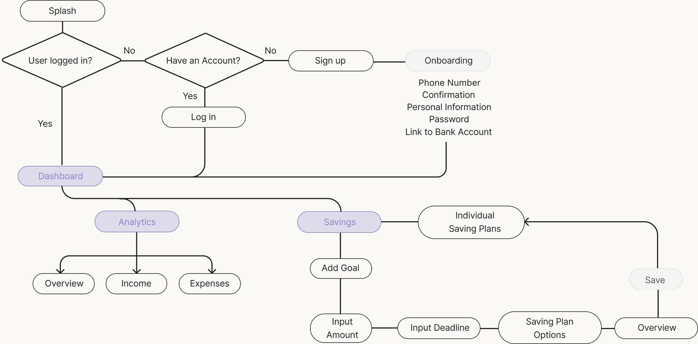
First Prototype
Wireframing for simplicity
I concentrated on presenting the data in a simple, clear way based on user stories, and designed the flow for creating new saving plans to be supportive without overwhelming the user. Several data visualization and chronological navigation patterns were explored before finalizing the current design.
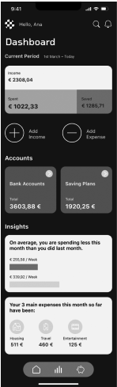
Branding
Balancing clarity and friendliness
The brand prioritizes simplicity, focusing on trust, precision, and friendliness. The three app categories (Income, Expenses, and Savings) are color-coded, with Savings as the accent color.
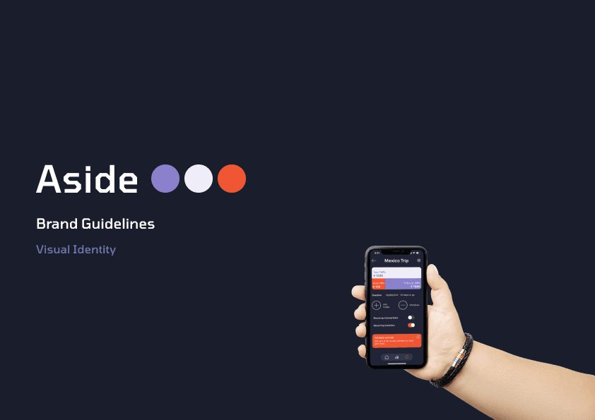
Usability Testing
Simplifying the savings plan setup for new users
To test the main feature I explored how new users approach setting up a Savings Plan within the app. The goal was to evaluate the ease of use and clarity of the process, focusing on users' understanding of key features.
Scenario
You're a new user, and you would like to set up a new Savings Plan. How would you do it?
Painpoints
Priority
Recommendation
Users were confused by the color scheme, expecting it to have more meaning.
2Moderate / High
The color scheme is overwhelming and disrupts user flow. Use more neutrals and apply tertiary colors with lower opacity.
Users wanted more detail on what was being deducted into savings accounts.
2Moderate / High
A screen is missing for additional details on recurring transfers. Add feedback for Saving Plans linked to specific goals.
“It looks very nice, I like this first visualization. They make it pop and easy to read the information.”
“It seems very colorful to me. But I guess it helps to express different things”
“I like that there are only 3 icons in the bottom and that is floating, makes me feel that is not one of those overwhelming apps.”
“I like the overview in Analytics. I get it right away. I wish I could click and explore more.”
“Looks like a lot, but it’s not really too complicated. It takes some seconds to know what is going on but eventually feels super useful”
About the Saving Plan screen: “It seems that there is something off in this screen, I understand everything, but not as fast as in the other screens”
Final Design
Balancing clarity and friendliness
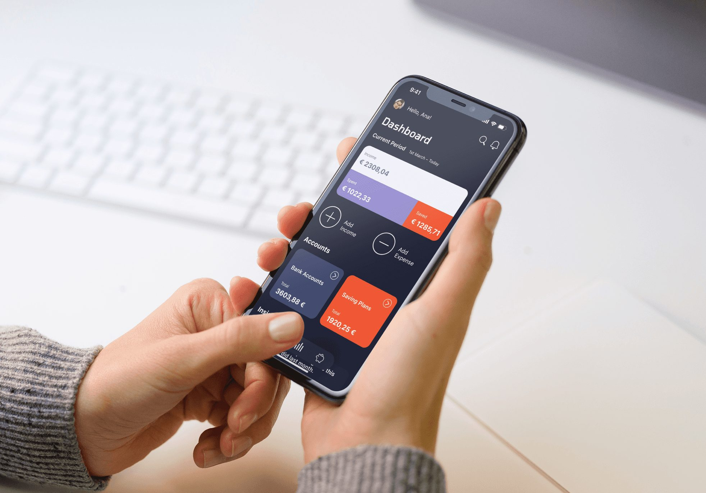
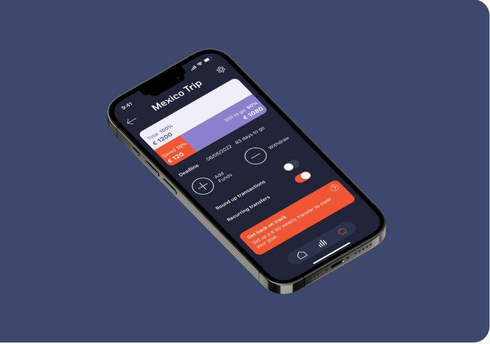
Onboarding
A step-by-step process designed to build trust while guiding users through inputting sensitive information. The tone and design balance trustworthiness with a friendly approach.
Dashboard
The main landing screen highlights key information at a glance. Users can view their current period's balance, bank account details, and insights based on transactions and goals.
- A bright box shows total savings achieved, with quick access to all savings plans.
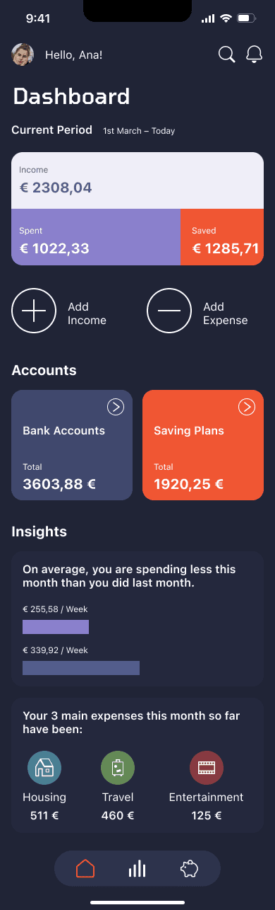
- Simple spending visualization for the current period, offering instant clarity on expenses.
- Allows users to manually input additional incomes or expenses outside the linked bank system.
- Displays total balance across all linked accounts, with easy access to breakdowns or account management.
- Rotating insights on finances to help users adjust their behavior and reach goals.
Analytics
Provides detailed, visually organized information with chronological listings and navigation options for full or category-specific overviews.
- Users can switch between weekly, monthly, or yearly views for detail or a broader picture.
- A stacked bar graph, consistent with color coding, allows quick reviews of specific time periods, navigable with gestures.
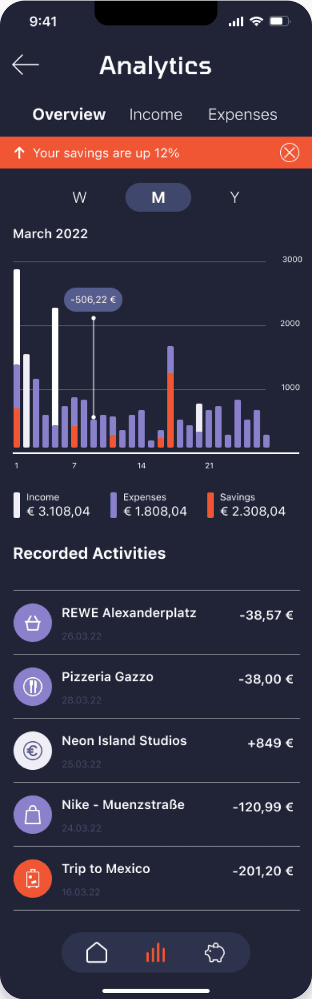
- Small tips and insights appear at the top to guide users through their financial deep dive.
- Totals are displayed under the graph, followed by a categorized list of recorded transactions.
Savings
As the core feature, this section presents an overview of all saving plans with a clear structure focused on progress.
Responsive and Adaptable
The modular UI design ensures easy adaptation to various screen sizes. Larger screens offer new layout options and expanded possibilities for the dashboard.
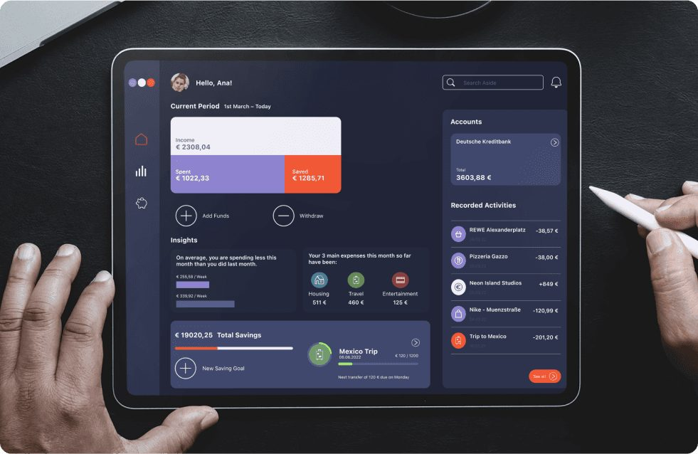
Retrospective
Balancing clarity and friendliness
Working with partial guidelines and interpreting a brief was a valuable exercise in balancing client needs with user requirements while maintaining cohesive branding. Despite the abundance of financial tools, this project successfully focused on simplicity and ease of use for effective financial management.
The limited timeframe allowed me to streamline the essentials, though further exploration of data visualisations and additional testing would enhance the product. I look forward to delving deeper into this field.
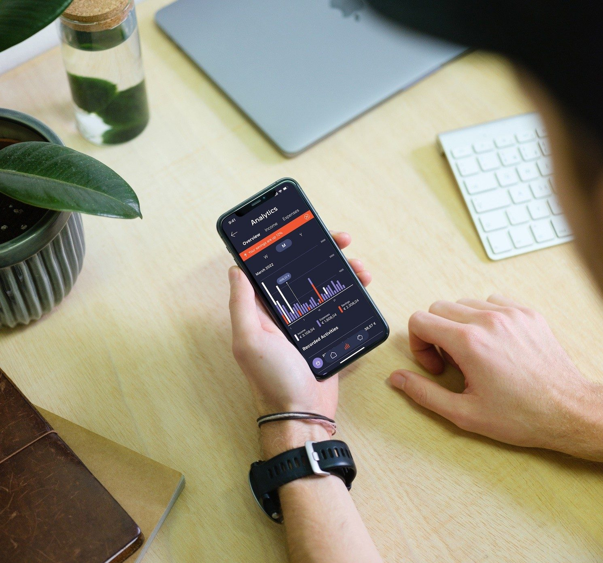
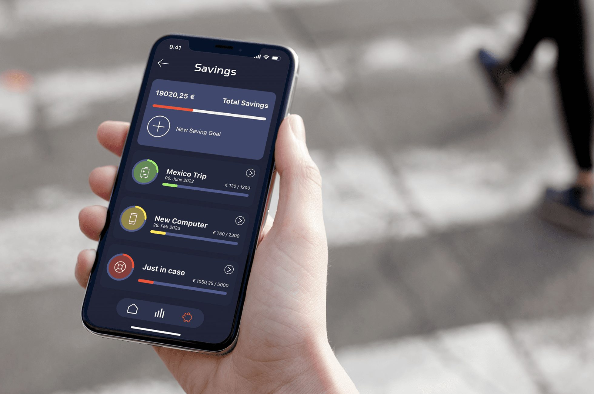